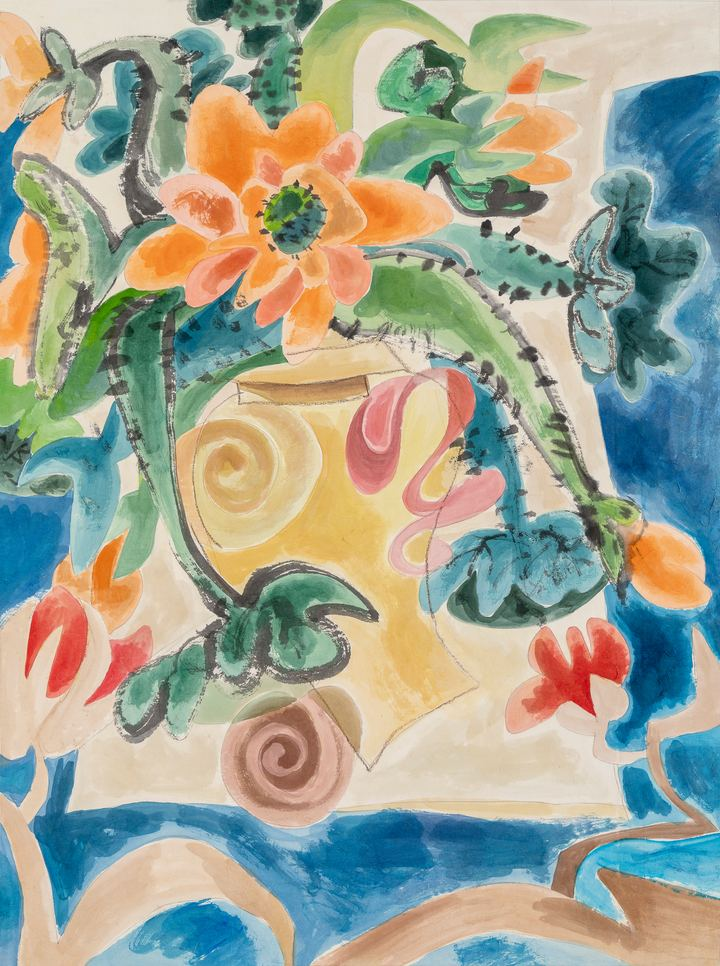

The Lotus's Time Begins with the Stem연의 시간은 줄기에서 시작된다

A lotus is never just a flower. Only by embracing its stem and roots, the mud and the water, does it become a flower at all. I wanted to paint the solitary waiting just before it blooms: life flowing along the stem, and the stillness inside the unopened bud.
An old tale tells of a farmer who thought his grain grew too slowly and pulled each sprout up a little to help it along. By morning, every sprout had withered. Life is not remembered by the flower alone. Through the quiet of the roots and the long, weary time of the stem, the flower blooms on its own, in its own time.
연꽃은 꽃만으로 존재하지 않는다. 줄기와 뿌리, 진흙과 물을 모두 품고서야 비로소 꽃이 된다. 나는 꽃이 피기 직전의 고독한 기다림, 줄기를 따라 흐르는 생명과 아직 피지 않은 꽃망울 속의 정적을 그리고 싶었다.
옛이야기에 곡식이 더디 자란다며 싹을 하나하나 뽑아 올려 준 농부가 있었다. 이튿날 아침 밭의 싹은 모두 말라 있었다. 삶은 꽃의 순간으로만 기억되지 않는다. 진흙의 혼란 속에서 우리는 조금씩 단단해지고, 뿌리의 고요와 줄기의 고단한 시간이 있기에 꽃은 제때 스스로 핀다.